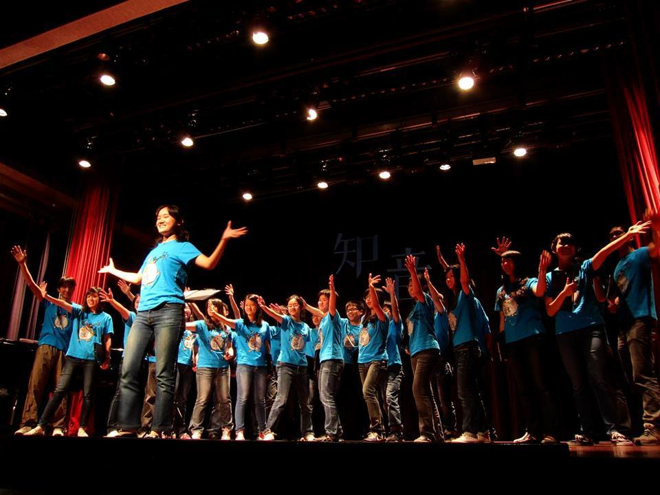

I started to play piano when I was four years old and attended government sponsored music lessons in elementary school for professional training. Since then, I have begun to fall in love with music. I am pleased to win Honorable Mention on Piano in Kaohsiung City Music Competition in 2003.
I also started to play French horn at age 9. I was leader of the French horn team in the Kaohsiung Municipal Yan-Cheng Elementary School Orchestra which won First Place in Kaohsiung City Music Competition in 2003 and 2004 (video). I also won many individual Awards on French Horn Solo, including Third Prize and First Prize in Taiwan Music Competition – Kaohsiung in 2002 and 2003, respectively, and First Prize in Kaohsiung City Music Competition in 2003.
I never live a life without music. When I was in junior high and senior high school, I joined Century Youth-Children's Choir, one of the most famous youth choirs in Taiwan which got invited to travel around the world to perform shows for particular events. The most wonderful experience was our performance in the Esglesia del Pi Church in Barcelona, Spain, in 2008.
As I have broad interests in music, in 2010, I joined the EE Rock Band as a drummer and had a few rock performances, including one in 2011. In 2013, I also joined the EE Choir and had a performance in EE Concert in December 2013.
